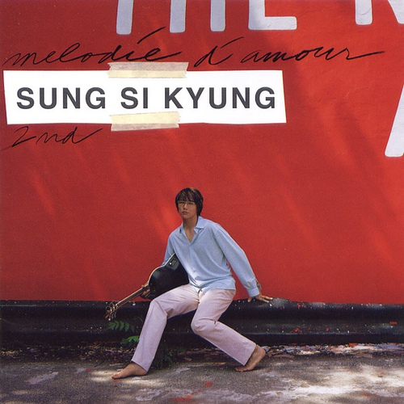

미련하게 아무도 모를것 같아
태연한척 지내왔어
너 떠나버린 뒤 다 알았데
어설픈 나의 눈빛은
행복했던 지난 날의 나와 너무 달라서
이별했음을 느낄 수 밖에
너와 나 정말 그때는 좋았었나봐
나 화낼 줄도 몰라 내내 즐거웠데
그래 그랬었지 널 사랑하기에
세상은 내게 커다란 감동이었어
그 순간을 잊는다면 내가 살아온
짧은 세월은 너무나 보잘것 없어
되돌려 보려해 너를 찾으려해
너 없이 살아도 멀쩡히 숨은 쉬겠지만
후회와 그리움 만으론 견딜 수 없어
하루도 자신이 없어
초라했데
어설픈 나의 눈빛은
행복했던 지난날의 나와 너무 달라서
이별했음을 느낄 수 밖에
너와 나 해어질줄은 아무도 몰랐데
하루가 너무 짧던 우리의 날들이
그래 그랬었지 널 사랑하기에
세상은 나에게 커다란 감동이었어
그순간을 잊는다면 내가 살아온
짧은 세월은 너무나 보잘것 없어
되돌려 보려해 너를 찾으려해
너없이 살아도 멀쩡히 숨은 쉬겠지만
후회와 그리움 만으로는 견딜 수 없어
하루도 자신이 없어 도저히